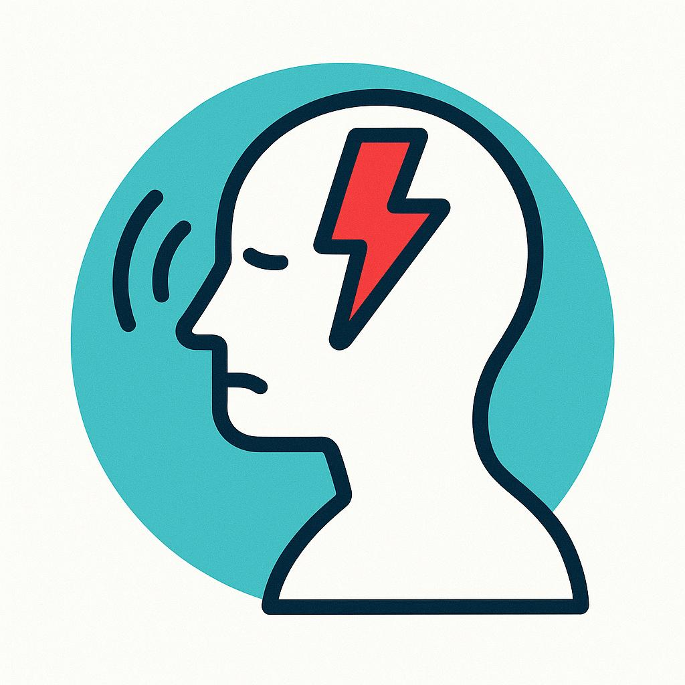
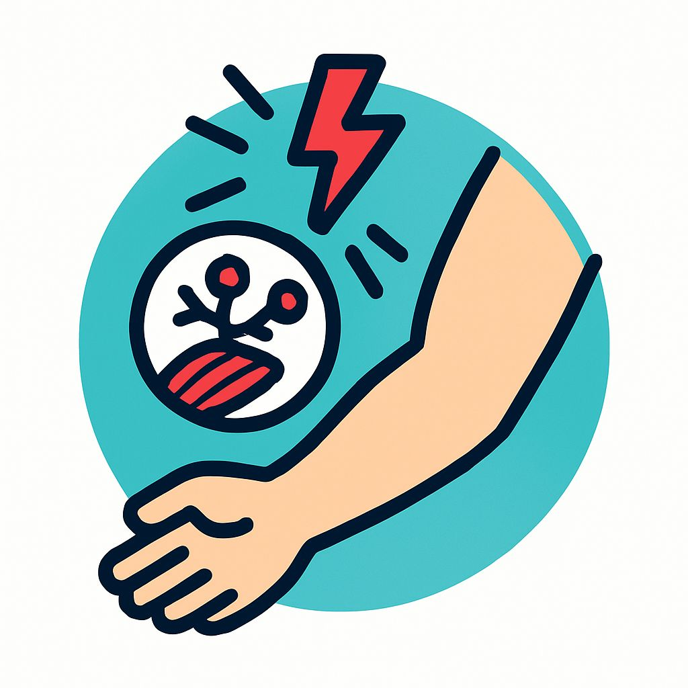
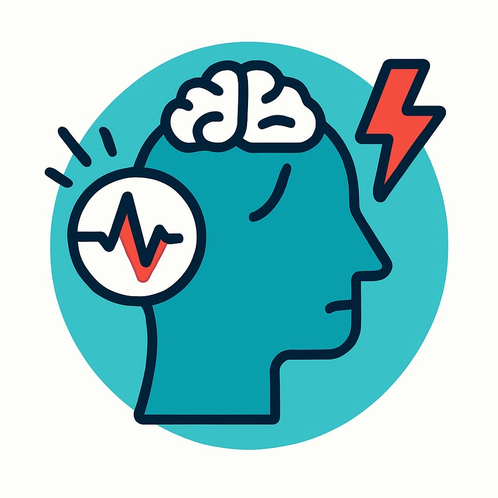
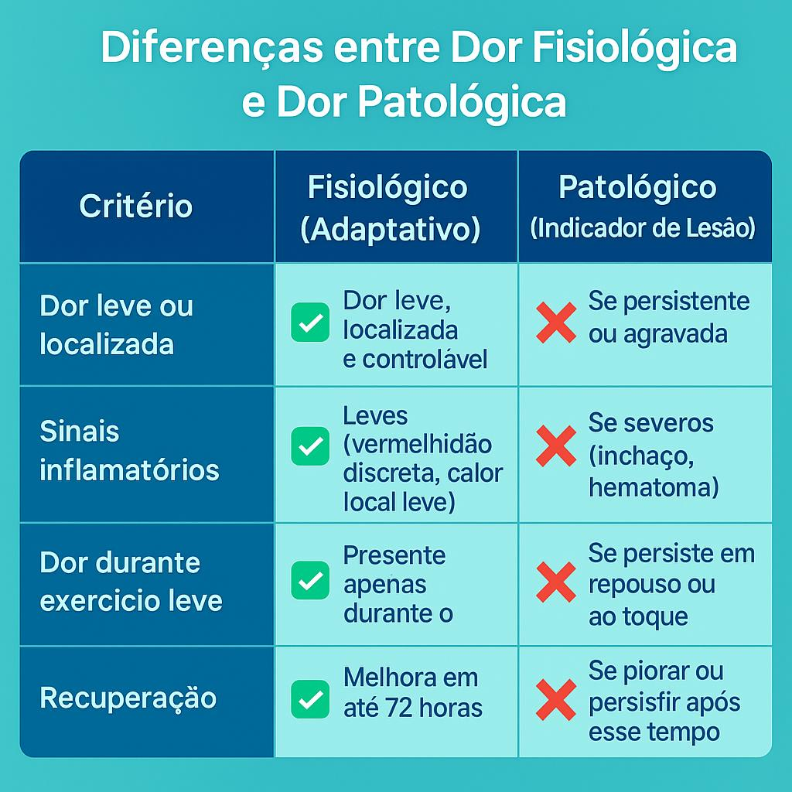

A Associação Internacional para o Estudo da Dor (IASP) define dor como "uma experiência sensorial e emocional desagradável associada a ou semelhante àquela associada a dano tecidual real ou potencial".
O QUE É A DOR?

COMO A DOR É GERADA?

A dor é uma interpretação de um estímulo gerado nos receptores de dor que caminha por neurônios sensitivos até chegar em um filtro (tálamo) e repassados para o lóbulo parietal após ter sido modulado pelo sistema emocional (límbico).
POR QUE SENTIMOS DOR?

O estímulo doloroso de longa duração está associado ao processo inflamatório das fibras musculares que, ao se recuperarem, podem gerar aumento de força, massa muscular e resistência ao exercício. Enquanto o de curta duração pode estar associado a estiramentos excessivos ou rápidos pela técnica errada ou falta de alongamento.
NEUROPROTEÇÃO E O EXERCÍCIO FÍSICO
A ação neuroprotetora do exercício físico foi relacionada a sua capacidade de prevenção e modulação nas condições inflamatórias. Evidências mostram que menos infecções virais e bacterianas e menor incidência de inflamação e menor taxa de neurodegeneração e declínio cognitivo em praticantes de exercício físico. O efeito anti-inflamatório do exercício físico é dependente de fatores críticos como a duração, a intensidade do exercício e tipo de exercício adotado (Martins, 2019).
BENEFÍCIOS DO EXERCÍCIO NA DOR
O exercício promove melhor modulação da dor, pela ativação do sistema parassimpático, quando feito em práticas regulares, além de fortalecer o sistema muscular evitando dores agudas em estiramentos e dores de longa duração em tarefas básicas diárias como caminhadas e carregamento de pesos.
DOR PÓS-TREINO

A dor pós-treino, também conhecida como dor muscular tardia (DMT), é uma resposta fisiológica normal que ocorre após exercícios intensos ou novos. Esta dor é resultado de microlesões nas fibras musculares e do processo inflamatório que ocorre durante a recuperação. É importante diferenciar esta dor natural do processo de adaptação muscular de dores que podem indicar lesões.
CUIDADOS COM A DOR
Os cuidados com a dor envolvem a identificação precisa da sua causa, o controle adequado dos sintomas e a promoção do bem-estar do paciente. É fundamental ouvir atentamente a queixa da pessoa, avaliar a intensidade da dor e utilizar estratégias que podem incluir desde medicamentos analgésicos até terapias complementares, como fisioterapia, acupuntura ou técnicas de relaxamento. O acompanhamento profissional é essencial para evitar a cronificação da dor e garantir que o tratamento seja seguro, eficaz e individualizado, respeitando as necessidades e limitações de cada pessoa.
Panfletos
METODOLOGIA
O presente estudo é uma pesquisa qualitativa do tipo revisão narrativa, na qual a metodologia utilizada foi uma pesquisa bibliográfica baseada em literatura já publicada nas seguintes bases de dados: Bireme, PubMed, Scielo e UpToDate.
REFERÊNCIAS
- Rice D, Nijs J, Kosek E, Wideman T, Hasenbring MI, Koltyn K, Graven-Nielsen T, Polli A. Exercise-Induced Hypoalgesia in Pain-Free and Chronic Pain Populations: State of the Art and Future Directions. J Pain. 2019 Nov;20(11):1249-1266. doi: 10.1016/j.jpain.2019.03.005. Epub 2019 Mar 21. PMID: 30904519.
- Rice D, Nijs J, Kosek E, Wideman T, Hasenbring MI, Koltyn K, Graven-Nielsen T, Polli A. Exercise-Induced Hypoalgesia in Pain-Free and Chronic Pain Populations: State of the Art and Future Directions. J Pain. 2019 Nov;20(11):1249-1266. doi: 10.1016/j.jpain.2019.03.005. Epub 2019 Mar 21. PMID: 30904519.